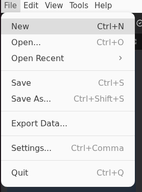

System Design Workflow Tutorial¶
This comprehensive tutorial guides you through the complete process of designing, configuring, and deploying a multi-ECU automotive system in TrueFidelity Desktop. You'll learn how to create a realistic ECU network topology, configure hardware settings, build firmware, and monitor running systems in real-time.
Overview¶
Goal: Build a complete automotive gateway system with multiple ECUs connected via CAN bus, configure their properties, deploy them as Docker containers, and monitor their real-time execution using TrueFidelity's comprehensive monitoring tools.
What You'll Learn:
- Creating and organizing system projects in TrueFidelity
- Building ECU network topologies using the visual System Canvas
- Configuring ECU hardware and software properties
- Understanding the relationship between ECUs and Network buses
- Deploying ECU containers and managing their lifecycle
- Monitoring system performance and debugging issues
- Exporting configurations for team collaboration
Time estimate: 20-30 minutes for complete walkthrough
Prerequisites:
- TrueFidelity Desktop installed and license activated
- Docker Desktop running and accessible
- Basic understanding of automotive ECU concepts
- (Optional) ECU firmware binaries for deployment, or use mock mode for learning
Step 1: Create a New System¶
Let's begin by creating a new TrueFidelity system project. This will be the container for all your ECUs, networks, and configurations.
- Launch TrueFidelity Desktop
- Wait for the application to fully load
-
You should see the welcome screen or an empty workspace
-
Create a new system project using the File menu
- Navigate to File → New in the menu bar
- Alternatively, use the keyboard shortcut
Ctrl+N(Windows/Linux) orCmd+N(macOS)

- Configure your new system in the New System dialog:
- System name: Enter
tutorial-gateway-system- this will be your project identifier - Description (optional): Add "Tutorial system for learning TrueFidelity workflows"
- Save location: Click Browse and select your projects folder (e.g.,
~/Documents/TrueFidelity/Projects) - Leave other settings at their defaults for now

- Click Create to generate your system
After creation, TrueFidelity automatically opens the System Design workspace. You'll see three main areas:
- Left panel: Toolbox containing draggable components
- Center: System Canvas (currently empty) where you'll build your topology
- Right panel: Properties panel for configuring selected elements

Understanding the Workspace
The System Design mode is specifically optimized for creating ECU topologies. The layout is inspired by professional CAD tools, with a component library on the left, workspace in the center, and properties on the right. This arrangement allows for efficient drag-and-drop system design.
Panel Management
If any panels are missing, you can restore them via View → Panels menu. The Toolbox is essential for this tutorial - ensure it's visible before proceeding.
Step 2: Add ECUs to the Canvas¶
Now we'll add Electronic Control Units (ECUs) to build our automotive system. ECUs are the computational nodes that will run your firmware and communicate over the network.
Understanding the Toolbox¶
- Locate the Toolbox panel on the left side of the screen
- It contains two main categories: Components and Networks
- Each category can be expanded to show available items

- Expand the Components category by clicking the arrow next to "Components (1)"
- You'll see "ECU - Electronic Control Unit" listed
- This is a generic ECU template that can be configured for different purposes
Adding Your First ECU¶
- Add a Gateway ECU to the canvas:
- Click and hold on the "ECU" item in the Toolbox
- Drag it onto the empty canvas area
- Release the mouse button to place the ECU
- The ECU appears as a UML-style component box with the label "«ECU»"

- Position the Gateway ECU in the upper-center area of the canvas
- Click on the ECU to select it (you'll see blue selection handles)
- The ECU label will initially show a generic name
- We'll configure its specific properties in the next step
Adding Additional ECUs¶
- Add two more ECUs for a complete system:
- Drag another ECU from the Toolbox and place it in the lower-left area
- This will be your PCM (Powertrain Control Module)
- Drag a third ECU and place it in the lower-right area
- This will be your BCM (Body Control Module)
Your canvas should now display three ECU nodes arranged in a triangle formation:

Canvas Navigation
- Zoom: Use your mouse wheel or the zoom controls in the toolbar
- Pan: Hold right-click and drag, or use middle mouse button
- Select: Left-click on any element
- Multi-select: Hold Ctrl/Cmd and click multiple elements
- Grid snap: Elements automatically align to the grid for neat layouts
ECU Visualization
ECUs are displayed using UML component notation (rectangular boxes with small squares on the side). This is a standard representation familiar to automotive engineers. The gray color indicates they're not yet configured or running.
Step 3: Configure ECU Properties¶
Each ECU needs to be configured with hardware specifications, software settings, and firmware options. Let's start with the Gateway ECU.
Configuring the Gateway ECU¶
- Select the Gateway ECU by clicking on it
- The ECU will show blue selection handles around its border
- The Properties panel on the right automatically updates to show ECU settings

- Review the Properties Panel structure on the right side:
- GENERAL section: Basic identification (Name, ID)
- HARDWARE section: Board selection, memory, and flash settings
- SOFTWARE section: Operating system and firmware configuration
-
DEBUG section: Development and debugging options
-
Configure the Gateway ECU properties:
GENERAL Settings:
- Name: Change from default to
Gateway - ID: Automatically generated (e.g.,
ecu-1766568942949) - leave as is
HARDWARE Settings:
- Board: Select
S32G274A Rdb2from the dropdown - Memory: Enter
512MB(typical for gateway ECUs) - Flash: Enter
2MBfor flash storage
SOFTWARE Settings:
- Operating System: Select
FSL Linuxfrom the dropdown - Firmware Mode: Choose between:
- Binary File: Use a pre-compiled firmware binary (.elf, .bin, .hex)
- Source Code: Build from source using TrueFidelity's build system
- For this tutorial, select Binary File mode
- Firmware Binary: Click "Browse" to select a file, or leave empty for mock mode
- Click "Apply Changes" button at the bottom of the Properties panel
- This saves your configuration to the ECU node
- The ECU label updates to show "Gateway" and the board type
Configuring the PCM¶
- Select the PCM ECU (lower-left node) and configure:
- Name:
PCM - Board:
S32K3X4EVB(a typical automotive MCU board) - Memory:
256MB - Flash:
1MB - Operating System:
FreeRTOSorZephyr - Firmware Mode: Binary File
- Click Apply Changes
Configuring the BCM¶
- Select the BCM ECU (lower-right node) and configure:
- Name:
BCM - Board:
S32K3X4EVB(same as PCM for this example) - Memory:
256MB - Flash:
1MB - Operating System:
FreeRTOSorZephyr - Firmware Mode: Binary File
- Click Apply Changes
After configuration, your ECUs will display their names and board types on the canvas.
Hardware Board Selection
TrueFidelity supports various automotive development boards including: - S32G274A: High-performance processors for gateway applications - S32K3X4: General-purpose automotive MCUs for body and powertrain - IMX8: Application processors for infotainment - Custom boards can be added through configuration files
Firmware Options
- Binary File Mode: Quick deployment using pre-built binaries
- Source Code Mode: Full build integration with TrueFidelity's build system
- The "Build Firmware" button (green) becomes active when source code mode is selected
Mock Mode
If you don't have firmware binaries, leave the firmware path empty. TrueFidelity will run in mock mode, simulating ECU behavior for learning purposes.
Step 4: Add Network Bus and Create Connections¶
In TrueFidelity, networks are represented as separate bus nodes that ECUs connect to, accurately modeling real automotive architectures where multiple ECUs share a common communication bus.
Understanding Network Architecture¶
Before we proceed, it's important to understand how automotive networks work:
- ECUs don't connect directly to each other
- Instead, they connect to shared network buses (CAN, LIN, Ethernet, FlexRay)
- Multiple ECUs can connect to the same bus
- Messages broadcast on the bus are visible to all connected ECUs
Adding a CAN Bus¶
- Expand the Networks category in the Toolbox
- Click the arrow next to "Networks (1)"
-
You'll see "CAN Bus - Controller Area Network" listed
-
Drag a CAN Bus onto the canvas:
- Click and hold on "CAN Bus" in the Toolbox
- Drag it to the center area between your three ECUs
- Release to place the network bus
-
The CAN bus appears as a red horizontal bar (red is the standard color for CAN)
-
Position the CAN Bus centrally:
- Place it roughly in the middle of your three ECUs
- The bus can be resized by dragging its edges if needed
Connecting ECUs to the Network¶
- Connect the Gateway ECU to the CAN Bus:
- Hover over the Gateway ECU - you'll see small blue connection handles appear
- Click and drag from one of the handles
- Drag the connection line to the CAN bus
- Release when the bus highlights, indicating a valid connection
- A blue connection line appears between the ECU and the bus

- Connect the remaining ECUs:
- Connect the PCM ECU to the same CAN bus using the same drag technique
- Connect the BCM ECU to the CAN bus
- All three ECUs are now on the same network
Your system should now show all three ECUs connected to a central CAN bus:

Understanding Network Visualization¶
Notice the visual elements:
- CAN Bus: Displayed as a red horizontal bar with "CAN Bus 1" label
- Baud rate: Shows "500k" indicating 500,000 bits per second
- Connection lines: Blue lines from ECUs to the bus
- Connection handles: Small circles that appear on hover for creating connections
Step 5: Configure Network Properties¶
Now let's configure the CAN bus parameters to match your system requirements.
- Select the CAN Bus by clicking on the red network bar
- The bus will show selection highlights
-
The Properties panel updates to show network configuration
-
Configure network settings in the Properties Panel:
GENERAL Settings:
- Name: Keep as "CAN Bus 1" or rename to "Main CAN"
- ID: Auto-generated network identifier
CONFIGURATION Settings:
- Network Type: CAN (already set)
- Baud Rate:
500000(500 kbps - standard for powertrain) - Channel:
can0(the Linux network interface name) -
DBC File: (Optional) Browse to select a DBC database file for signal definitions
-
Apply the configuration:
- Click Apply Changes to save the network settings
- The bus label updates to show the baud rate
Common CAN Baud Rates
- 125 kbps: Low-speed body electronics
- 250 kbps: General body control
- 500 kbps: Powertrain and chassis (most common)
- 1 Mbps: High-speed diagnostic
Network Colors
TrueFidelity uses color coding for quick network identification: - Red: CAN bus - Light Blue: LIN bus - Dark Blue: Ethernet - Green: FlexRay
Step 6: Save the System¶
It's important to save your work regularly. TrueFidelity stores your complete system configuration including all ECUs, networks, and connections.
- Save your system using one of these methods:
- Press Ctrl+S (Windows/Linux) or Cmd+S (macOS)
- Click File → Save from the menu bar
-
Click the Save icon in the toolbar
-
Verify the save location:
- The save dialog shows your project folder
- File name:
tutorial-gateway-system.tfsystem -
This is a JSON-based file containing your complete system definition
-
Confirm the save was successful:
- Look for "System saved" notification in the bottom-right
- The window title updates to show the saved file name
- The save icon in the toolbar becomes grayed out
Auto-save Feature
TrueFidelity automatically saves your work every 5 minutes by default. You can adjust this in Settings → Preferences → Auto-save interval.
File Format
The .tfsystem file format contains:
- ECU configurations and properties
- Network topology and connections
- Firmware paths and build settings
- Diagram layouts and visual positions
- Project metadata and version information
Step 7: Build Firmware (Optional)¶
If you have firmware source code and want to build it within TrueFidelity, this section guides you through the integrated build process. Skip this if you're using pre-built binaries or mock mode.
Switching to Source Code Mode¶
-
Select an ECU that you want to build firmware for (e.g., Gateway)
-
Change to Source Code mode in Properties:
- In the SOFTWARE section, find "Firmware Mode"
- Select Source Code radio button
-
New fields appear for source configuration
-
Configure source settings:
- Source Path: Browse to your firmware source directory
- Build Target: Select the appropriate target (e.g.,
zephyr-native-posix) - Build Configuration: Choose Debug or Release
- Compiler: Auto-detected based on target
Starting the Build¶
- Initiate the build process:
- Click the green Build Firmware button in Properties
-
A progress dialog appears showing build stages
-
Monitor build progress:
- The Build Console panel automatically opens at the bottom
- Shows real-time compiler output and warnings
- Progress bar indicates completion percentage
- Typical build time: 2-5 minutes depending on firmware complexity
Build Output¶
- Review build results:
- Success: Binary path automatically updates in ECU properties
- Warnings: Listed in Build Console, usually safe to proceed
- Errors: Build fails, check console for specific issues
TrueFidelity Build System
The integrated build system uses: - tf-build: Containerized toolchain management - Cross-compilation: Automatic toolchain selection per target - Dependency management: Handles SDK and library dependencies - Cache optimization: Incremental builds for faster iteration
Build Best Practices
- Start with Debug configuration for development
- Use Release configuration for performance testing
- Keep Build Console open to monitor progress
- Save build logs for troubleshooting
Step 8: Deploy and Start ECUs¶
Now we'll deploy your ECUs as Docker containers and start them running. This is where your static design becomes a live, executing system.
Understanding the ECU Status Panel¶
- Locate the ECU Status panel:
- If not visible, open it via View → Panels → ECU Status
- By default, it appears in the bottom area in Monitoring mode
-
Shows a table with all ECUs in your system
-
Review the ECU Status columns:
- ECU: Name of each ECU
- STATUS: Current state (Stopped/Running)
- IMAGE: Docker image being used
- CPU: Processor usage percentage
- MEMORY: RAM usage
- NETWORK I/O: Data transfer rates
- UPTIME: How long the ECU has been running

Starting the System¶
- Start the entire system from the toolbar:
- Locate the Start button in the main toolbar (green play icon)
- Click it to begin system deployment
- A progress dialog appears showing "Starting ECUs..."
Toolbar Start vs Individual Start
The toolbar Start button deploys all ECUs simultaneously. There's no right-click context menu on individual ECUs - use the toolbar for system-wide control.
- Monitor the startup process:
- ECUs transition through states: Stopped → Starting → Running
- The STATUS column shows a green dot when running
- CPU and Memory values begin updating with real-time data
-
UPTIME starts counting from 00:00:00
-
Wait for all ECUs to reach Running state:
- Gateway ECU typically starts first (being the coordinator)
- BCM and PCM follow shortly after
- Full system startup usually takes 10-30 seconds

Understanding Status Indicators¶
The ECU Status panel uses visual indicators:
- Green dot + "Running": ECU is active and healthy
- Gray dot + "Stopped": ECU is not deployed
- Yellow dot + "Starting": ECU is being deployed
- Red dot + "Error": ECU failed to start (check Console for details)
Resource Monitoring¶
Once running, observe the resource usage:
- CPU %: Shows processor load (normal: 0.1-5% idle, 20-80% under load)
- Memory: Displays RAM usage in MB (should match configured limits)
- Network I/O: Updates when ECUs communicate over CAN bus
Performance Indicators
- Low CPU usage (< 1%) indicates idle ECUs
- Sudden CPU spikes might indicate processing events
- Memory should remain stable unless there's a leak
- Network I/O increases during message broadcasts
Docker Requirement
If ECUs fail to start, ensure: - Docker Desktop is running - Docker service has sufficient resources allocated - No firewall blocking Docker operations
Step 9: Monitor Running System¶
With your ECUs running, TrueFidelity provides comprehensive monitoring tools to observe system behavior, debug issues, and validate functionality. Let's explore each monitoring capability.
View ECU Hardware Status¶
The ECU Status panel provides your primary health dashboard:
- Verify system health:
- All three ECUs should show green "Running" status
- CPU usage typically stays below 5% when idle
-
Memory usage should be stable and within configured limits
-
Identify resource patterns:
- Gateway ECU may show slightly higher CPU due to routing duties
- BCM and PCM should have similar resource profiles
- Network I/O spikes indicate active communication
View Console Logs¶
The ECU Console aggregates logs from all running ECUs in real-time:
- Open the ECU Console panel:
- Click the Console tab in the bottom panel area
- Logs begin streaming immediately from all ECUs
- Each line shows: Timestamp, Level, Source ECU, and Message

- Understanding log structure:
15:25:24.991 INF Vcu [00:04:13.213,000] e[0m<inf> s32k3_pedal_demo: ACCEL : status=0x01... - 15:25:24.991: Wall clock time
- INF: Log level (INFO)
- Vcu: Source ECU name
- [00:04:13.213,000]: ECU runtime timestamp
-
Message content: Actual log data
-
Filter logs effectively:
- Filter by ECU: Select specific ECU from dropdown (e.g., "Vcu")
- Filter by level: Toggle INFO, WARNING, ERROR, DEBUG buttons
- Text search: Type keywords in the filter box
-
Auto-scroll: Keeps latest logs visible (toggle off to inspect specific entries)
-
Console controls:
- Pause: Freezes log display for detailed inspection
- Clear: Removes all logs from display (doesn't affect ECU operation)
- Export: Saves current logs to file for analysis
Debugging with Logs
- Watch for ERROR level messages (red) indicating problems
- INFO messages (white) show normal operation flow
- DEBUG messages (gray) provide detailed internal state
- Correlation IDs in messages help trace request flows
Monitor Resources¶
- Open the Resource Monitor panel:
- Shows real-time CPU and memory graphs
- Each ECU has its own colored line
-
X-axis shows time, Y-axis shows percentage/MB
-
Interpret the graphs:
- Steady lines: System running normally
- Spikes: Processing events or message handling
- Gradual increase: Possible memory leak
-
Sudden drops: ECU restart or resource release
-
Adjust monitoring window:
- Use dropdown to select: 1 min, 5 min, 15 min, 30 min
- Shorter windows show more detail
- Longer windows reveal trends
View Network Traffic¶
The Network Traffic panel displays CAN bus communication:
- Monitor CAN messages:
- Real-time display of all CAN frames
- Shows ID, DLC, Data, Timestamp, and Count
-
Updates as ECUs exchange messages
-
Filter traffic:
- By CAN ID (e.g.,
0x123) - By source ECU
-
By data patterns
-
Analyze communication patterns:
- Periodic messages (heartbeats, status)
- Event-driven messages (state changes)
- Request-response pairs
Access ECU Terminals¶
The Terminal panel provides shell access to ECU containers:
- Open the Terminal panel:
- Located in the bottom panel area
-
Shows a dropdown selector for ECU choice
-
Select an ECU for terminal access:
- Use the dropdown to choose an ECU (e.g., "Gateway")
- Terminal connects automatically if the OS supports it
- Shell prompt appears when connected

- Execute diagnostic commands: ```bash # Check running processes ps aux
# View memory usage cat /proc/meminfo
# Check network interfaces ip addr show
# View CAN interface status ip link show can0 ```
Terminal Availability
Terminal access requires: - ECU running Linux-based OS (FSL Linux, Ubuntu, etc.) - Debug mode enabled in ECU configuration - Proper shell binary in the container image - FreeRTOS and Zephyr ECUs typically don't support terminal access
Monitoring Best Practices
- Keep Console open during testing to catch errors immediately
- Use Resource Monitor to identify performance bottlenecks
- Export logs before stopping ECUs to preserve diagnostic data
- Terminal access is powerful but should be used carefully in production
Step 10: Make Changes to Running System¶
TrueFidelity allows you to modify system behavior while running, helping you test different scenarios and configurations. Here's how to manage runtime changes safely.
Stop the System¶
Since there's no individual ECU control, you work with the complete system:
- Stop all ECUs using the toolbar:
- Click the Stop button (red square icon) in the main toolbar
- All ECUs begin shutting down simultaneously
- STATUS changes from "Running" to "Stopping" to "Stopped"
-
Console shows shutdown messages from each ECU
-
Verify clean shutdown:
- Check Console for any error messages during shutdown
- ECU Status panel shows all ECUs with gray "Stopped" status
- Resource graphs flatline as ECUs stop consuming resources
Modify Network Configuration¶
With the system stopped, you can safely modify configurations:
- Return to System Canvas:
- Click on the System Canvas tab
-
Your topology diagram reappears
-
Select and modify the CAN Bus:
- Click on the red CAN bus bar
- In Properties panel, change Baud Rate from 500000 to 250000
- This simulates switching to a lower-speed bus configuration
-
Click Apply Changes
-
Modify an ECU configuration:
- Select the Gateway ECU
- Change Memory from 512MB to 256MB (simulating resource constraints)
- Enable Debug checkbox for additional logging
- Click Apply Changes
Save and Restart¶
- Save the modified system:
- Press Ctrl+S to save changes
-
Configuration file updates with new settings
-
Restart with new configuration:
- Click the Start button in toolbar
- ECUs redeploy with updated settings
- Gateway now runs with reduced memory
-
CAN bus operates at lower baud rate
-
Verify changes in monitoring:
- Console shows debug-level messages (if enabled)
- Resource Monitor reflects new memory limits
- Network Traffic shows adjusted timing for lower baud rate
Hot Reload vs Cold Restart
Currently, TrueFidelity requires stopping ECUs to apply configuration changes. Future versions will support hot-reload for certain properties.
Configuration Dependencies
Some changes require coordinated updates: - Changing baud rate affects all ECUs on that bus - Modifying network topology may break existing connections - Always verify system integrity after changes
Step 11: Export System Configuration¶
TrueFidelity provides multiple export options for sharing configurations, deploying to different environments, and integrating with CI/CD pipelines.
Export as Docker Compose¶
The most common export format for deployment:
- Access export options:
- Click File → Export → Docker Compose from the menu
-
Or use the toolbar Export button
-
Configure Docker export settings:
- Output path: Choose where to save docker-compose.yml
- Include volumes: Check to persist ECU data between runs
- Network mode: Bridge (default) or Host networking
-
Resource limits: Apply CPU/memory constraints
-
Review generated configuration:
yaml version: '3.8' services: gateway-ecu: image: truefidelity/ecu-runtime:latest container_name: gateway-ecu environment: - ECU_NAME=Gateway - CAN_INTERFACE=can0 - BAUD_RATE=500000 networks: - can-network -
Deploy with Docker Compose:
bash docker-compose up -d docker-compose logs -f
Export System Definition¶
For version control and team collaboration:
- Export as JSON:
- Click File → Export → System Definition (JSON)
- Creates a structured JSON file with complete system state
-
Ideal for programmatic processing and APIs
-
Export as YAML:
- Click File → Export → System Definition (YAML)
- Human-readable format perfect for version control
- Supports comments and is diff-friendly
Example YAML structure:
system:
name: tutorial-gateway-system
version: 1.0.0
ecus:
- name: Gateway
board: S32G274A-RDB2
memory: 512MB
firmware: binary
networks:
- type: CAN
baud_rate: 500000
connected_ecus: [Gateway, BCM, PCM]
Share with Team¶
- Collaboration options:
- Git integration: Commit .tfsystem and export files
- Cloud storage: Share via Teams, Slack, or cloud drives
- TrueFidelity Cloud: (Future) Direct project sharing
Export Best Practices
- Export both .tfsystem (complete project) and docker-compose.yml (deployment)
- Use YAML for configurations you'll edit manually
- Include exports in version control for change tracking
- Document any manual modifications needed for deployment
Import Capabilities
Exported configurations can be imported into TrueFidelity: - File → Import to load system definitions - Preserves all ECU settings and network topology - Automatically validates imported configurations
Step 12: Cleanup and Best Practices¶
After completing your tutorial session, properly clean up resources and prepare for future work.
Stop and Clean Up Resources¶
- Stop the running system:
- Click the Stop button in the toolbar
- Wait for all ECUs to show "Stopped" status
-
This ensures clean container shutdown and resource release
-
Export valuable data before closing:
- Export logs: Click Export in Console panel to save diagnostic data
- Save charts: Export Resource Monitor graphs for performance analysis
-
Document findings: Note any issues or observations for future reference
-
Close the system project:
- Click File → Close
- Choose to save any unsaved changes
-
The workspace returns to empty state
-
Clean up Docker resources (optional): ```bash # List TrueFidelity containers docker ps -a | grep truefidelity
# Remove stopped containers docker container prune
# Clean up unused networks docker network prune ```
- Archive or delete tutorial files:
- Navigate to your project folder
- Archive
tutorial-gateway-system.tfsystemfor reference - Or delete if this was just for learning
What You've Learned¶
Congratulations! You've successfully:
- ✅ Created a multi-ECU automotive system from scratch
- ✅ Configured ECU hardware and software properties
- ✅ Built network topology with CAN bus connections
- ✅ Deployed ECUs as Docker containers
- ✅ Monitored real-time system behavior
- ✅ Debugged using logs and terminal access
- ✅ Modified and redeployed configurations
- ✅ Exported system for sharing and deployment
Next Steps¶
Immediate Next Steps¶
- Explore advanced monitoring:
- Read the ECU Monitoring Walkthrough tutorial for deep-dive debugging
- Learn about Signal Analysis for CAN message inspection
-
Master Performance Profiling techniques
-
Build real firmware:
- Follow the Build Configuration Guide to compile actual ECU code
- Set up the tf-build toolchain for cross-compilation
-
Integrate your existing firmware projects
-
Customize your workspace:
- Explore Workspaces & Layouts to create role-specific views
- Save custom layouts for different workflows
- Configure keyboard shortcuts for efficiency
Advanced Topics¶
- Multi-Network Systems: Create complex topologies with multiple CAN/LIN buses
- Gateway Routing: Configure message routing between networks
- HIL Integration: Connect to real hardware for Hardware-in-Loop testing
- Scripting and Automation: Use TrueFidelity's API for automated testing
- Cloud Deployment: Deploy systems to Kubernetes clusters
Learning Resources¶
- Documentation: Review Reference section for detailed feature guides
- Video Tutorials: Watch walkthroughs on the TrueFidelity YouTube channel
- Community Forum: Join discussions and get help from other users
- Support: Contact support@truefidelity.io for technical assistance
Troubleshooting Guide¶
Common Issues and Solutions¶
ECUs Won't Start¶
Symptoms: ECUs remain in "Stopped" state, won't transition to "Running"
Solutions: 1. Verify Docker Desktop: - Ensure Docker Desktop is running (check system tray) - Restart Docker Desktop if needed - Check Docker resources (Settings → Resources → ensure adequate CPU/memory)
- Check error messages:
- Open Console panel before starting ECUs
- Look for red ERROR messages during startup
-
Common errors: "Image not found", "Port already in use"
-
Validate configuration:
- Ensure firmware paths are correct (if specified)
- Verify memory limits are reasonable (minimum 128MB)
- Check network configuration is valid
Terminal Connection Fails¶
Symptoms: Terminal panel shows "Connection failed" or remains blank
Solutions: 1. Verify ECU compatibility: - Only Linux-based OS ECUs support terminal (FSL Linux, Ubuntu) - FreeRTOS and Zephyr ECUs don't have shell access
- Check ECU status:
- ECU must be in "Running" state
-
Wait 10-15 seconds after start for initialization
-
Enable debug mode:
- Select ECU in System Canvas
- In Properties, check "Enable" under DEBUG section
- Apply changes and restart ECU
Network Traffic Not Appearing¶
Symptoms: Network Traffic panel empty despite running ECUs
Solutions: 1. Verify network setup: - Ensure ECUs are connected to the same network bus - Check CAN bus configuration matches ECU expectations
- Check filters:
- Clear any filters in Network Traffic panel
-
Ensure correct bus is selected if multiple networks exist
-
Validate firmware:
- Firmware must actively send CAN messages
- Check Console for "CAN init" or network startup messages
- Mock mode may not generate traffic without simulation
High Resource Usage¶
Symptoms: Host system slows down, high CPU/memory usage
Solutions: 1. Limit concurrent ECUs: - Start with fewer ECUs initially - Add more gradually while monitoring resources
- Adjust resource limits:
- Reduce ECU memory allocations in Properties
-
Set CPU limits in Docker export configuration
-
Optimize Docker settings:
- Docker Desktop → Settings → Resources
- Reduce CPUs and memory allocated to Docker
- Enable resource limits per container
Pro Tip
Keep the Console panel visible during all operations - most issues reveal themselves through error messages before symptoms appear in the UI.
Getting Help
If you encounter issues not covered here: 1. Check the Reference → FAQ section 2. Search the community forum 3. Contact support with: - System logs (exported from Console) - System configuration (.tfsystem file) - Screenshots of the issue - Docker and OS version information